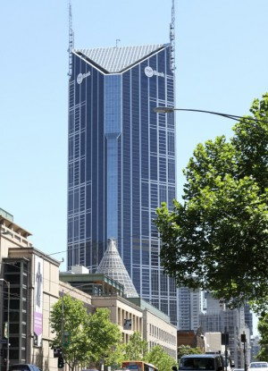
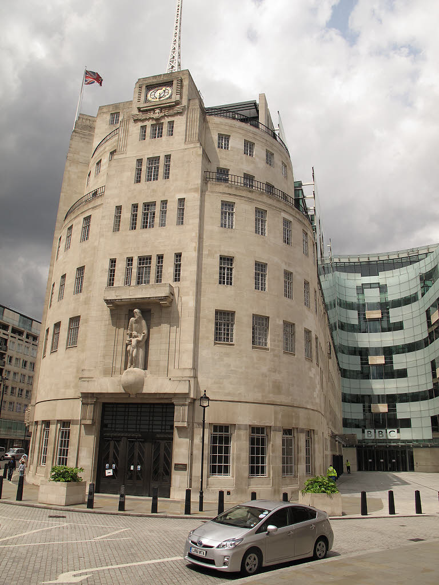
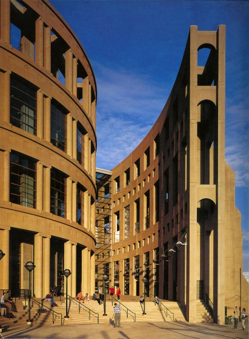
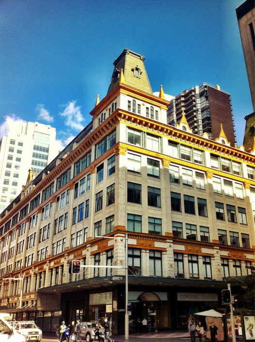

|  |
Melbourne Center Tower, MelbourneMy first job was here, working for Andersen Consulting, shortly before they split from Arthur Andersen to become Accenture (timely as AA went down in the Enron scandel a short time later). Of interest here is how the original Melbourne Shot Tower was incorporated into the Melbourne Central site under the glass spire. |
|  |
Broadcasting House, LondonThe beating heart of the BBC, this building looks down Regent St towards Oxford St in the heart of London. Millenium NYE was spent here watching the fireworks from the roof whilst looking out for Y2K bug gremlins! |
|  |
Vancouver Library Square, VancouverA short contract at the Immigration and Refugee Board of Canada saw me sitting at a desk watching skiers and snowboarders coming down 'The Cut' run on nearby Grouse Mountain. After work an evening lift pass could be had for $20 until 11pm! |
|  |
Downing Center, SydneyNow containing Local Law Courts, the Downing Centre used to be Sydney's first department store. Now the display windows rotate art exhibitions, the grand entrace hall hold security scanners, and a grand spiral staircase and chandelier remind us of more glamourous past days. |

|
State Savings Bank BuildingPart of the financial heart of Sydney, the image of the building was sometimes used on money boxes issued by the Commonwealth Bank to children. The money boxes were rectangular shape, roughly reflecting the dimensions of the bank building, and printed with the building's exterior. |